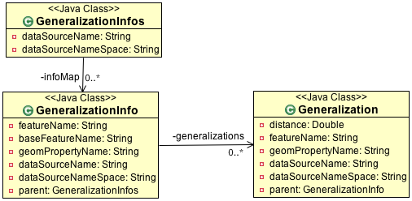

Pregeneralized Plugin¶
This plugin offers the the possibility to use pregeneralized features to reduce cpu and memory usage at runtime. The effect is used to improve the response time for client code.
This is an advanced plugin that is great for eking the greatest performance out of the GeoTools rendering system. This plugin allows you to smoothly switch between data at different levels of simplification when rendering at different levels.
Consider it something like an image pyramid for raster data operating at different zoom levels.
References
Maven:
<dependency>
<groupId>org.geotools</groupId>
<artifactId>gt-feature-pregeneralized</artifactId>
<version>${geotools.version}</version>
</dependency>
Connection Parameters¶
| Parameter | Description |
|---|---|
| “RepositoryClassName” | Class name for the Repository implementation, must have a default Constructor |
| “GeneralizationInfosProviderClassName” | Class name for a GeneralizationInfosProvider must have a default Constructor |
| “GeneralizationInfosProviderParam” | Optional Parameter for getGeneralizationInfos(obj) |
| “namespace” | Optional, an URI for an optional name space |
Pregeneralized¶
Before we start we need couple of things:
- Repository - used to look up featureSource implementations. See gt-main repository page.
- GeneralizationInfos - configuration for PreGeneralizedDataStore describing generalisation method used.
To create a PreGeneralizedDataStore:
As usual we recommend use of DataStoreFinder (as this plugin provides PreGeneralizedDataStoreFactory for it to use).:
Map<String,Serializable> paramMap = new HashMap<String,Serializable>(); DataStore ds = null; try { paramMap.put("RepositoryClassName", "org.geotools.data.DefaultRepository"); paramMap.put"GeneralizationInfosProviderClassName", "org.geotools.data.gen.info.GeneralizationInfosProviderImpl"); paramMap.put("GeneralizationInfosProviderParam", "src/test/resources/geninfo1.xml") ds = DataStoreFinder.getDataStore(paramMap)); } catch (IOException ex) { ex.printStackTrace(); } FeatureSource<SimpleFeatureType, SimpleFeature> fs = ds.getFeatureSource("GenStreams")To benefit from less memory usage und less cpu consumption the usage of Hints.GEOMETRY_DISTANCE is required. It is possible to pass hints to a query object, an example for reading all features with geometries fitting for a generalization of 22 meters:
FeatureSource<SimpleFeatureType, SimpleFeature> fs = ds.getFeatureSource("GenStreams"); //fs.getSupportedHints().contains(Hints.GEOMETRY_DISTANCE) must be true; Query q = new DefaultQuery("GenStreams"); q.getHints().put(Hints.GEOMETRY_DISTANCE, 22.0); FeatureCollection<SimpleFeatureType, SimpleFeature> fCollection = fs.getFeatures(q); // // business as usual, but with generalized geometries! //Creating by hand using RepositoryDSFinder:
Repository repo = new RepositoryDSFinder(); GeneralizationInfosProvider provider = new GeneralizationInfosProviderImpl(); GeneralizationInfos infos = null; try { infos = provider.getGeneralizationInfos("src/test/resources/geninfo1.xml"); } catch (IOException e) { e.printStackTrace(); } DataStore ds = new PreGeneralizedDataStore(infos,repo) FeatureSource<SimpleFeatureType, SimpleFeature> fs = ds.getFeatureSource("GenStreams")Creating by hand using DefaultRepository:
Repository repo = new DefaultRepository(); // // register your datastores in the repository // GeneralizationInfosProvider provider = new GeneralizationInfosProviderImpl(); GeneralizationInfos infos = null; try { infos = provider.getGeneralizationInfos("src/test/resources/geninfo1.xml"); } catch (IOException e) { e.printStackTrace(); } DataStore ds = new PreGeneralizedDataStore(infos,repo) FeatureSource<SimpleFeatureType, SimpleFeature> fs = ds.getFeatureSource("GenStreams")
Configuration¶
This section has sample xml configuraiton files with corresponding physical layou.
XML¶
Part of this java package is a GeneralizationInfosProviderImpl which offers the possibility to configure a GeneralizationInfos object in XML syntax.
Code example:
GeneralizationInfosProvider provider = new GeneralizationInfosProviderImpl();
GeneralizationInfos infos = null;
try {
infos = provider.getGeneralizationInfos("src/test/resources/geninfo1.xml");
} catch (IOException e) {
e.printStackTrace();
}
XML Configuration for vertical layout:
<?xml version="1.0" encoding="UTF-8"?>
<GeneralizationInfos version="1.0">
<GeneralizationInfo dataSourceName="dsStreams" featureName="GenStreams" baseFeatureName="streams" geomPropertyName="the_geom">
<Generalization dataSourceName="dsStreams_5" distance="5" featureName="streams_5" geomPropertyName="the_geom"/>
<Generalization dataSourceName="dsStreams_10" distance="10" featureName="streams_10" geomPropertyName="the_geom"/>
<Generalization dataSourceName="dsStreams_20" distance="20" featureName="streams_20" geomPropertyName="the_geom"/>
<Generalization dataSourceName="dsStreams_50" distance="50" featureName="streams_50" geomPropertyName="the_geom"/>
</GeneralizationInfo>
</GeneralizationInfos>
XML Configuration for horizontal layout:
<?xml version="1.0" encoding="UTF-8"?>
<GeneralizationInfos version="1.0">
<GeneralizationInfo dataSourceName="dsStreams_5_10_20_50" featureName="GenStreams" baseFeatureName="streams_5_10_20_50" geomPropertyName="the_geom">
<Generalization dataSourceName="dsStreams_5_10_20_50" distance="5" featureName="streams_5_10_20_50" geomPropertyName="the_geom5"/>
<Generalization dataSourceName="dsStreams_5_10_20_50" distance="10" featureName="streams_5_10_20_50" geomPropertyName="the_geom10"/>
<Generalization dataSourceName="dsStreams_5_10_20_50" distance="20" featureName="streams_5_10_20_50" geomPropertyName="the_geom20"/>
<Generalization dataSourceName="dsStreams_5_10_20_50" distance="50" featureName="streams_5_10_20_50" geomPropertyName="the_geom50"/>
</GeneralizationInfo>
</GeneralizationInfos>
XML Configuration for mixed layout:
<?xml version="1.0" encoding="UTF-8"?>
<GeneralizationInfos version="1.0">
<GeneralizationInfo dataSourceName="dsStreams" featureName="GenStreams" baseFeatureName="streams" geomPropertyName="the_geom">
<Generalization dataSourceName="dsStreams_5_10" distance="5" featureName="streams_5_10" geomPropertyName="the_geom"/>
<Generalization dataSourceName="dsStreams_5_10" distance="10" featureName="streams_5_10" geomPropertyName="the_geom2"/>
<Generalization dataSourceName="dsStreams_20_50" distance="20" featureName="streams_20_50" geomPropertyName="the_geom"/>
<Generalization dataSourceName="dsStreams_20_50" distance="50" featureName="streams_20_50" geomPropertyName="the_geom2"/>
</GeneralizationInfo>
</GeneralizationInfos>
Directories hold the generalized shape files. No white spaces are allowed within the distance list.
Physical Layout¶
Definition: The Base Feature is the original feature which is the starting point
A geometry generalized to m meters will be written as g(m) , e. g. g(5) is a geometry generalized to a minimum distance of 5 meters. The original geometry will be written as g(1)
A feature has the following components
- FID (Feature Identifier)
- a set of data attributes
- a set of geometry attributes (mostly only one, depending on the data store)
For the following example we will use the streams.shp from the gt-sample-data jar (which contains sample data for test cases).
This shapefile has the following feature type structure:
streams
FID CAT_ID CAT_DESCR the_geom int int int linestring
We have two alternatives for how to represent generalized feature:
Vertical layout
For each generalization, the whole feature set is duplicated, resulting in
streams
FID CAT_ID CAT_DESCR the_geom streams.1 1 4711 g1(1) streams.2 2 4712 g2(1) ... ... ... streams_5
FID CAT_ID CAT_DESCR the_geom streams.1 1 4711 g1(5) streams.2 2 4712 g2(5) ... ... ... streams_10
FID CAT_ID CAT_DESCR the_geom streams.1 1 4711 g1(10) streams.2 2 4712 g2(10) ... ... ... streams_20
FID CAT_ID CAT_DESCR the_geom streams.1 1 4711 g1(20) streams.2 2 4712 g2(20) ... ... ... streams_50
FID CAT_ID CAT_DESCR the_geom streams.1 1 4711 g1(50) streams.2 2 4712 g2(50) ... ... ...
The only difference between these 5 feature sets are the geometries, which are generalized by 5,10,20 and 50 meters respectively.
As you can see this approach results in a fair amount of dupication.
GenStreams
A new Feature feature type is hiding all other features and using them dependent on the GEOMETRY_DISTANCE hint.
FID CAT_ID CAT_DESCR the_geom int int int linestring
The disadvantage is the duplication of all attribute values for each generalization. If the features are stored as shape files, there is no other alternative because shape files allow only one geometry.
Storing the features in a database offers the possibility to use SQL views to avoiding this redundancy.
Horizontal layout
The generalized geometries were added as additional attributes.
streams
FID CAT_ID CAT_DESCR the_geom the_geom_5 the_geom_10 the_geom_20 the_geom50 streams.1 1 4711 g1(1) g1(5) g1(10) g1(20) g1(5) streams.2 2 4712 g2(1) g2(5) g2(10) g2(20) g2(5) ... ... ... ... ... ... ... GenStreams
Again, there is a new feature
FID CAT_ID CAT_DESCR the_geom int int int linestring The generalized geometry attributes are hidden and are not part of the GenStreams feature type.
Mixed layout
A combination of horizontal and vertical design
streams
FID CAT_ID CAT_DESCR the_geom streams.1 1 4711 g1(1) streams.2 2 4712 g2(1) ... ... ... streams_5_10
FID CAT_ID CAT_DESCR the_geom_5 the_geom10 streams.1 1 4711 g1(5) g1(10) streams.2 2 4712 g2(5) g2(10) ... ... ... ... streams_20_50
FID CAT_ID CAT_DESCR the_geom_20 the_geom_50 streams.1 1 4711 g1(10) g1(50) streams.2 2 4712 g2(10) g2(50) ... ... ... ... GenStreams
FID CAT_ID CAT_DESCR the_geom int int int linestring Independent of the used physical layout, the feature type of GenStreams is always the same. All other feature types are not visible and are called backend features.
Toolbox¶
Included in this packages is a command line utility. Locate the jar file, the name is “gt-feature-pregeneralized-<version>.jar Assuming the version is “2.5-SNAPSHOT”, call with:
java -jar gt-feature-pregeneralized-2.5-SNAPSHOT.jar
Validating the xml config file
You can validate your xml config file with:
java -jar gt-feature-pregeneralized-2.5-SNAPSHOT.jar validate myconfig.xml
Create pregeneralized geometries for shape files
Creating generalized versions for a shape file which can be used for a vertical layout.:
java -jar gt-feature-pregeneralized-2.5-SNAPSHOT.jar generalize streams.shp targetDir 15.0,30
In the above example the parameters are:
- streams.shp The source shape file
- targetDir The directory where to store the generalized shape files
- 15.0,30 A comma separated list of distances (integer or doubles, decimal separator is ”.”).
This example would generate a sub directory “15.0” and a sub directory “30” in the target directory. The sub
Background¶
Motivation
Spatial features have a least one geometry, which mostly contains a large number of points. As an example, the border of Austria (which is a small country) is a polygon constructed from 380000 points.
Drawing this border on a screen with a resolution of 1280x1024 will draw each pixel many,many times. The same holds true for printing on a sheet of paper.
The idea is to generalize this geometry, saying it is sufficient to have a minimum distance of 500 meters between 2 Points of the polygon. This generalized geometry has still enough points to be drawn on the screen or on a sheet of paper.
Idea
The idea is to have a data store / feature source / feature reader implementation which acts as wrapper for the original features and their generalized geometries. Additionally there is a new Hint GEOMETRY_DISTANCE which has a value for the minimum distance between two points required.
This Hint can be passed within the Query object.
The wrappers itself behave like the original objects, except returning geometries dependent on the new hint. If no hint is given, the original geometries are returned.
Relationship between GEOMETRY_DISTANCE and generalized geometries
Assume the original geometries have an accuracy of 1 meter and we have generalizations for all geometries with 5m, 10m, 20m and 50m.
Requested Distance (dist) Returned geometry dist < 5 original geometry 5 <= dist < 10 geometry generalized to 5 m 10 <= dist < 20 geometry generalized to 10 m 20 <= dist < 50 geometry generalized to 20 m 50 <= dist geometry generalized to 50 m Conclusion
The focus of this module is to support the transparent handling of generalized geometries. There is no restriction how the GeneralizationInfos object is build and how the needed data stores are found.
The two interfaces
- org.geotools.data.Repository
- org.geotools.data.gen.info.GeneralizationInfosProvider
Allow special implementations to be plugged in. As an example, a GeneralizationInfosProvider implementation can build the configuration data from a jdbc database, getting as parameter a JNDI name.
Once again, modifications of pregeneralized features are NOT possible.
DataStructure¶
Internally the following data structure is set up.
GeneralizationInfos¶
Each PreGeneralizedDataStore has exactly one object of type GeneralizationInfos.
GeneralizationInfos holds a collection of GeneralizationInfo objects. The size of this collection is equal to the number of PreGeneralizedFeatureSource objects contained in the data store.
- infoMap - mapping from names of generalized features to the orresponding GeneralizationInfo objects
- dataSourceName - Optional, default data source location for all GeneralizationInfo objects
- dataSourceNameSpace - Optional, name space for the default data source location
GeneralizationInfo¶
A GeneralizationInfo holds the configuration information for one feature type and his generalized geometries.
- featureName - Name of the generalized feature (“GenStreams”)
- baseFeatureName - Name of the base feature (“streams”)
- geomPropertyName - Name of the geometry attribute in the base feature (“the_geom”)
- generalizations - Collection of org.geotools.data.gen.Generalization objects
- dataSourceName - Location of the datasource for the base Feature (URL of shape file) If no location is given, use location from GeneralizationInfos parent object.
- dataSourceNameSpace - Optional, name space for the dataSourceName
Generalization¶
A Generalization object belongs to a GeneralizationInfo object and holds information for geometries generalized to a given distance.
- distance - The generalization distance
- featureName - The the name of the feature containing these geometries (“streams_5_10”)
- geomPropertyName - The name of the geometry property (“the_geom_5”)
- dataSourceName - Optional, if not specified, dataSoureName from the GeneralizationInfo parent object is used.
- dataSourceNameSpace - Optional, name space for the dataSourceName
Repository¶
Prior to creating a pregeneralized data store an object implementing the interface Repository is needed. This class is document in gt-main repository page.
For PregeneralizedDataStore this interface has one important method
public DataStore dataStore(Name name)
A Name object has a local name and a namespace (which could be null).
The local name corresponds to the dataSoureName property in the GeneralizationInfos, GeneralizationInfo and Generalization objects. The same holds true for the namespace parameter and the dataSourceNameSpace property.
The content of the dataSourceName could be a registered name for a datastore (of course) or an URL to a shape file,an URL to a property file containing connect parameters for a database or anything else. It depends on the implementation of the Repository interface.
Included in this package is an implementation org.getotools.data.gen.DSFinderRepository, which interprets a dataSoureName ending with ”.shp” or ”.SHP” as location of a shape file and anything else as a property file. This implementation will use the geotools DataStoreFinder.getDataStore(Map params) method to find the needed data store.
Another existing Implementation is org.geotools.data.DefaultRepository which is useful for creating the data stores in the application and registering them with the corresponding names.